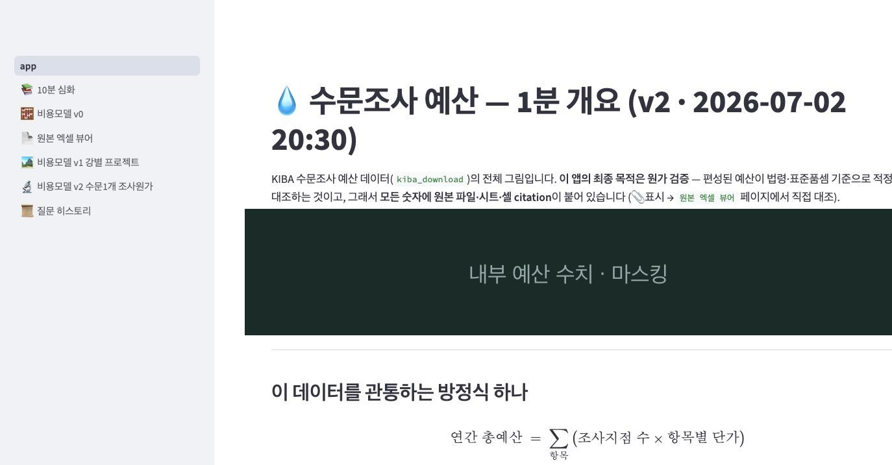
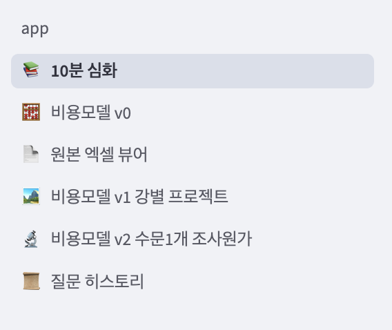
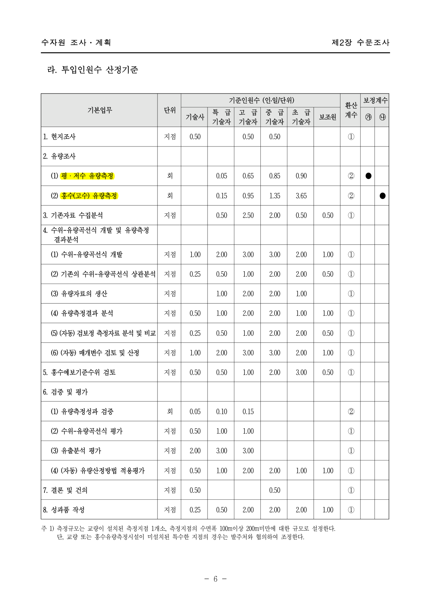
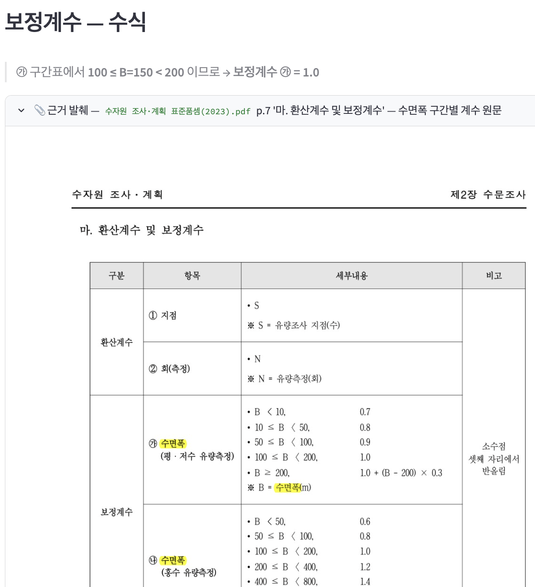
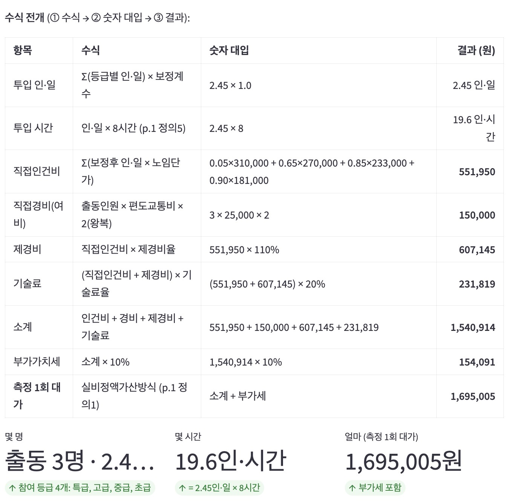

AI를 쓴다는 건 결국 세 가지를 증명하는 일입니다 — 결과를 믿고 실무에 넣을 수 있는가, 성과가 조직에 남아 계속 굴러가는가, 도구를 비판적으로 골라 쓰는가. 각 주제가 무엇을 왜 묻는지는 해당 절 첫머리에서 다시 짚습니다.
flowchart TB R(["🧭 AI를 어떻게 쓰는가 — 세 가지를 증명하는 일"]):::root R --> H1 R --> H2 R --> H3 H1["① 문제 해결 · 아키텍처 (§1)
결과를 믿고 실무에 넣을 수 있는가
신뢰성 = 리스크 관리"]:::h1 H2["② 업무 생산성 (§2)
성과가 조직에 남아 계속 굴러가는가
개인기 → 조직 역량"]:::h2 H3["③ 도구 · 모델 (§3)
한계를 알고 골라 쓰는가
기술 의사결정"]:::h3 classDef root fill:#0b2e2a,color:#ffffff,stroke:#0b6b63,stroke-width:2px; classDef h1 fill:#0b6b63,color:#ffffff,stroke:#083f3a,stroke-width:1.5px; classDef h2 fill:#a8560a,color:#ffffff,stroke:#6e3907,stroke-width:1.5px; classDef h3 fill:#33505f,color:#ffffff,stroke:#22333c,stroke-width:1.5px;
바로 가기 → §1 문제 해결 · §2 조직 생산성 · §3 도구·모델
| 항목 | 한 줄 요약 |
|---|---|
| 1. 문제 해결 | 한국경영분석연구원에서 수행한 정부 원가 검증 프로젝트입니다. AI가 만든 근거를 원본 대조·이미지 근거·교차 파일 불변식·독립 2차 추정이라는 네 겹 장치로 반증 가능하게 만들었습니다. 정답이 있는 문제에선 45개 설정 자동 채점(벤치마킹)으로 검증을 체계화합니다. |
| 2. 조직 생산성 | 개발자 3명뿐인 조직에서 회의록 → AI 제안 → 사람 항목별 승인 → 개발자 검증 루프를 만들고 정책을 문서화했습니다. 문서 검토 10시간 → 2시간, 그리고 담당자가 바뀌어도 워크플로우가 재현되도록 절차를 조직에 남겼습니다. |
| 3. 도구·모델 | Claude Code를 주력으로 쓰는 이유와, 직접 관찰한 네 가지 한계(모르는 것도 안다고 말함 · 검증 대상 착오 · 확신도와 정확도의 비례하지 않음 · 비용의 비선형 증가)를 정리했습니다. |
이 주제가 던지는 세 질문 — 결과를 믿고 실무에 넣을 수 있는가.
먼저 밝혀둡니다 — 아래 Ⓐ 사례는 제가 한국경영분석연구원에서 실제로 수행한 정부 프로젝트(댐 수문(水門 · floodgate) 유량조사 원가 검증)입니다. "AI 얘기하다 왜 수문이?" 싶겠지만, 검증 이야기는 전부 그 실무에서 겪은 것이라 이렇게 씁니다.
flowchart TB A1["배경 · 제약
무엇이 걸려 있었나 — 리스크·비용"]:::s1 --> A2["핵심 프롬프트 · 대화
무엇을 먼저 요구했나 — 검증 우선"]:::s1 --> A3["적용 전 검증
실무 투입 전 어떻게 확인했나"]:::s1 classDef s1 fill:#e9f3f2,stroke:#0b6b63,color:#0b3f3a,stroke-width:1.3px;
검증 방식은 하나로 갈립니다 — 정답셋이 있는가. supervised와 unsupervised를 가르는 선입니다. 제약도 여기서 갈립니다. 그래서 §1은 양쪽을 다른 프로젝트로 다룹니다.
정부 표준품셈과 발주처 예산을 대조해 편성 예산이 기준에 맞는지 검증하는 Streamlit 앱. 채점할 정답이 없어 정확도를 추적 가능성으로 대체해야 합니다.
그래서 걸린 제약저장소: 비공개 (클라이언트 데이터) — 대신 검증 설계 노하우는 이 문서에 전부 공개합니다. 핵심은 코드가 아니라 사고 과정이니까요.
1,297쪽 항공법(14 CFR)에서 정확한 조항을 찾는 RAG. 홀드아웃 정답셋을 만들 수 있어 검증을 자동 채점·벤치마킹으로 끌어올립니다(§1-6).
그래서 걸린 제약저장소: github.com/bookseal/llm-app-lab · 라이브 llm-app-lab.bit-habit.com

다듬은 요약 대신 첫 프롬프트를 날것 그대로 남깁니다. 오디오 받아쓰기라 문장이 거칠고 오타도 있지만("파악을 할 수 있느", "validtion"), 그래서 결론이 아니라 사고의 흐름이 보입니다. 핵심만 하이라이트했습니다. (내부 데이터 폴더명 한 곳만 마스킹.)
강 별로 수문조사들을 한 것들이 다 저장되어 있는 데 너무 내용이 많고 그 예산이라고 할만한 부분도 카테고리가 너무 많다. 그래서 이 전체적으로 파악이 안되는데. 파악을 할 수 있느. 어떻게 보면 1분만에 이해할 수 있는 적절한 spread sheet와 인사이트를 보여주는 html을 만들어주고, 그 후 10분 정도 시간 들여서 이해할 수 있는 html도 만들어주고. 그 다음에 결국에는 궁극적으로 내가 원하는것은 1개 강의 수문을 조사시 몇명이 몇시간 얼마의 비용이 들어가는지 분석하는 것이다. 하지만 이게 바로 하게 되면 환각이 일어날수도있고, 이게 나름의 방정식일텐데 이해하기가 어려울 수도 있다. 마치 선형회귀로 서울 아파트 가격을 예측할때 다양한 feature들을 고려해서 더 정확하게 예측할 수 있겠다만, 그러면 이해가 안되니 heuristic하게 일단 size만 가지고 예측하는 것처럼. 처음에는 아주 간단한 마치 하나의 feature 고려하는 것처럼 정확도는 떨어지더라도 validtion이 될 수 있는 방향으로 해야겟다. html을 만들때 아무래도 streamlit으로 해야될 거 같으니. 아까 말한것과 다르게 html이 아니라 streamlit으로 만들어줘. 다시한번 말하는데 validation이 가장 중요하니, 가 문장의 근거는 실제 [내부 데이터]를 한번 가공해서 그 데이터를 매번 citation해줘.
↑ 이 한 문단이 담은 사고 흐름
flowchart TB P["전체가 안 잡힌다
데이터·예산 카테고리 과다"]:::prob P --> G["목표를 3단으로 쪼갬
1분 → 10분 → 1개 강 = 몇 명·몇 시간·얼마"]:::goal G --> W["바로 복잡하게 가면?
환각 위험 + 이해 불가 — 아파트값 다중회귀처럼"]:::warn W --> S["그래서 heuristic부터
size 하나로 어림 · 정확도↓ 검증↑"]:::solu S --> V["validation이 가장 중요"]:::key V --> C["모든 값에 원본 citation"]:::key2 V --> T["도구 정정: html → streamlit"]:::tool classDef prob fill:#fdeeec,stroke:#a3241d,color:#7a1a15; classDef goal fill:#e9f3f2,stroke:#0b6b63,color:#0b3f3a; classDef warn fill:#fdf4e8,stroke:#a8560a,color:#7a3d06; classDef solu fill:#eaf6f0,stroke:#0a7048,color:#08512f; classDef key fill:#0b6b63,stroke:#083f3a,color:#ffffff; classDef key2 fill:#e9f3f2,stroke:#0b6b63,color:#0b3f3a; classDef tool fill:#eef3f6,stroke:#33505f,color:#22333c;
코드 얘기는 한 줄도 없습니다. 대신 이미 다 들어 있습니다 — 단계적 이해(1분 → 10분 → 궁극), 환각 위험을 스스로 예상, 정확도보다 검증 우선, heuristic-first, 그리고 도구를 바꾸는 중간 정정(html → streamlit). 전부 "무엇을 만드나"가 아니라 "어떻게 믿을 것인가"입니다.
이어진 대화 — 목적을 헷갈린 AI를 "이건 원가 검증이다"로 되돌리고, 좌표 인용을 거부하고, 추출 채널 자체를 불신한 과정 — 은 부록 A에 원문(마스킹)으로, 그 결과는 바로 아래 1-3에 정리했습니다.
모두 AI가 먼저 틀렸고, 제가 발견해 방향을 바꾼 사건입니다.

이때 던진 원문 — "아이고 니가 목적을 완전히 헷갈렸는데 … 우리가 원가 검증을 하는 프로젝트를 하고 있거든. 이 예산이 실제 그 법령하고 맞는지를 항상 보는 …"
약 50분 만에 완성도 높은 앱이 나왔지만, 프레이밍이 "총예산을 이해하는 도구"였습니다. 실제 목적은 "이 예산이 기준에 부합하는지 검증"이었습니다. 결과물은 그럴듯했지만 목적 함수가 틀려 있었습니다.
발견: 코드가 아니라 앱을 써보다 알았습니다. 제 도메인 감각과 앱이 강조하는 게 어긋났거든요. 사전 기대치가 있으니 불일치가 보였습니다.
조치: 목적을 정정하고 프로젝트 메모리에 기록했습니다. "이 데이터가 실제로 그런지 궁금하다"는 요구에서 원본 엑셀 뷰어가 나왔습니다 — 행·열 좌표를 그대로 보존해 어디서든 원본과 대조됩니다. 페이지는 덮어쓰지 않고 버전을 붙여 이전 결론을 남깁니다.
이때 던진 원문 — "그 근거라는 부분을 spreadsheet의 일부를 복사붙여넣기 해서 누구나 spreadsheet에서 온 것처럼 해줘. … 새로운 수식이 나오면 그걸 근거를 보여줘"
인용이 좌표 문자열이었습니다(📎 근거: 단가표 D4). 엄밀해 보이지만 그 자리에서 검증할 수 없고, 무엇보다 지어낸 좌표와 진짜 좌표가 겉으로 구분되지 않습니다.
조치: 인용을 원본 시트의 실제 조각으로 바꿨습니다. 엑셀 행 번호·열 문자를 유지한 발췌를 접이식으로 붙이고, 인용 행은 연노랑·인용 셀은 진노랑으로 강조했습니다. "왜 측정 종류가 두 가지인가" 같은 파생 질문은, 표준품셈 해당 페이지에 두 행만 존재한다는 사실을 보여주는 것으로 답했습니다.
이때 던진 원문 — "pdf는 확실히 표로 되어 있으니 읽기가 어렵네. pdf는 스크린샷도 그냥 찍어서 근거로 보여주라"
PDF를 일반 텍스트 추출로 읽자 인력 투입 표가 구분자 없는 숫자 나열로 나왔습니다.
(1) 평ㆍ저수 유량측정회0.050.650.850.90②●등급 칸은 여섯 개인데 값은 네 개뿐이고, 어느 값이 어느 등급인지 알 수 없는 상태였습니다. 하나만 밀려도 하위 인건비 계산 전체가 조용히 오염됩니다 — 에러가 발생하지 않기 때문에 더 위험합니다.
발견: 특정 숫자가 아니라 추출 경로 자체를 불신했습니다. 근거 발췌가 표로 읽히지 않으니 채널을 믿을 수 없었습니다.
조치(3단): ① 레이아웃 보존 모드로 재추출해 값–등급 대응 확정(합계 2.45 인·일). ② PDF를 이미지로 렌더해 표 원형을 근거로 제시 — 스크립트 생성이라 원본이 바뀌면 재생성. ③ 전사값이 원본과 일치하는지 재대조하고 기록.


이때 던진 원문 — "현장 출동인원이 몇명이 필요한지는 원래 알 수 없나? … 적용보정계수 같이 수식으로 계산한것들은 그 수식까지 표현해야지. 모든 수식은 다 표현해줘."
"현장 출동 인원"이 기본값 3으로 하드코딩된 채 입력처럼 보였습니다. 파라미터처럼 생겼지만, 근거 없는 상수가 법적 원가표 안에 있던 겁니다.
조치: 표준품셈은 연인원(인·일)만 규정하고 동시 투입 인원은 안 정합니다. 그래서 데이터에서 하한을 유도했습니다(1일 내 완료 + 사람은 못 나누므로 ⌈2.45⌉ = 3명, 등급 구성상 상한 4명). 상수를 유도로 대체한 겁니다. 모든 계산은 수식 → 대입 → 결과 3열로 펼쳤습니다. 결과만 있으면 전부 재계산해야 하지만, 수식이 남으면 어느 항이 틀렸는지 좁혀집니다.

여기서부터가 이 일의 핵심입니다 — AI가 낸 것을 실무에 넣기 전에 거치는 유효성 검증(validation). 데이터를 밖으로 낼 수 없고 틀린 값이 곧 법적·금전적 리스크인 환경에서, reliability는 기능이 아니라 요건이었습니다.
flowchart TB A["AI 산출물"] --> B["① 원본 대조
행·열 보존 발췌 + 하이라이트"] A --> C["② 채널 검증
PDF는 이미지 렌더로 표 원형 확인"] A --> D["③ 교차 파일 불변식
자동 점검 스크립트"] A --> E["④ 독립 2차 추정
예산 데이터를 읽지 않는 경로"] B --> F["적용"] C --> F D --> F E --> F D -.->|"불일치는 숨기지 않고"| G["알려진 데이터 이슈로 공개"]
가장 강력했던 것은 교차 파일 불변식 검사였습니다. 서로 다른 파일이 같은 사실을 말하는지 프로그램으로 확인하므로, 자기일관적인 환각으로는 통과할 수 없습니다.
아래는 실제 코드입니다 — 말이 아니라 이렇게 돌아갑니다. (파일명·금액은 파라미터라 노출 없음, 로직은 원본)
chk = items.dropna(subset=["수량", "단가_백만원", "총계_백만원"]).copy() chk["모델값"] = chk["수량"] * chk["단가_백만원"] chk["오차_백만원"] = chk["총계_백만원"] - chk["모델값"] n_exact = (chk["오차_백만원"].abs() < 0.5).sum() max_err_pct = (chk["오차_백만원"].abs() / chk["총계_백만원"]).max() * 100 # 총계를 안 보고 수량×단가를 다시 곱한다. 서로 다른 셀이 말하는 사실이라 # 자기일관적 환각으로는 이 등식을 통과할 수 없다.
def evidence(rel_file, sheet, row_from, row_to, col_from="A", col_to=None,
hl_rows=None, hl_cells=None):
"""근거를 '원본 스프레드시트 발췌'로 붙이고, 인용된 행·셀을 하이라이트."""
df = raw_slice(rel_file, sheet, row_from, row_to, col_from, col_to) # 엑셀 좌표 그대로
rows, cells = set(hl_rows or []), set(hl_cells or [])
def _row_style(row):
out = []
for col in df.columns:
if f"{col}{row.name}" in cells:
out.append("background-color:#ffd54a; font-weight:600") # 인용 셀 = 진노랑
elif row.name in rows:
out.append("background-color:#fff3c4") # 인용 행 = 연노랑
else:
out.append("")
return out
# → '지어낸 좌표'와 '진짜 좌표'가 화면에서 색으로 갈린다.
def evidence_pdf(label, txt_name):
"""PDF 근거: 페이지 스크린샷(형광펜)을 보여준다. 없으면 텍스트로 폴백."""
png = DATA / f"{txt_name}.png"
if png.exists():
st.image(str(png)) # 표를 깨뜨리지 않는 이미지 그대로
st.caption("↑ PDF 스크린샷 (🟡 형광펜 = 인용 문구)")
else:
st.code(_read_txt(txt_name)) # 폴백: 기계 추출 원문
[데이터] / [가정] 라벨 규약도 이때 정착했습니다. 출처가 확인된 값과 제가 채운 가정을 화면에서 구분했는데, 이유는 하나입니다 — 검증이 실패했을 때 "데이터가 틀렸는지, 가정이 틀렸는지"를 즉시 구분할 수 있어야 하고, 섞어두면 그것이 불가능합니다. 실제로 AI가 특정 단가를 출처 없이 그럴듯하게 채웠을 때, 그 값은 [가정]으로 표시되고 사용자가 수정 가능하게 남았습니다.
같은 원가를 서로 모르는 두 경로로 계산합니다. 복식부기의 차변=대변, 또는 독립된 두 목격자처럼요.
경로 B가 예산을 안 보는 게 핵심입니다. 두 값이 같으면 서로를 검증한 것, 다르면 어디가 틀렸는지 신호입니다. 실제로 약 40% 차이가 났습니다 — 모델을 억지로 맞추지 않고, 격차의 원인(노임단가·측정 횟수·수면폭)을 조절 변수로 노출해 귀속했습니다. 독립 경로의 가치는 일치할 때가 아니라 어긋날 때 나옵니다.
def once_cost(task, fct):
# 측정 1회 대가 = 품셈 인원 × 공표 노임단가 × 대가승수. 예산은 안 본다.
r = labor[labor["업무"] == task].iloc[0]
dl = sum(float(r[g]) * fct * wages[g] for g in GRADES) # 직접인건비
return dl * (1 + ovh_rate) * (1 + fee_rate) + team * fare * 2
annual = (n_py*cost_py + n_hs*cost_hs + fixed_cost) * vat_mult # 법령만으로 나온 연 원가
gap = (annual - UNIT) / UNIT * 100 # UNIT = 편성 예산 단가(값은 다른 곳). 두 경로의 차이(%)
# → annual은 예산을 한 번도 안 봤다. 그래서 gap이 '진짜 신호'다.
공개 저장소로 운영하는 학습용 사이트에서, 사이드바가 보이지 않는 문제가 있었습니다. AI는 네 겹으로 검증했습니다 — CI 통과, 자원 응답 200, 배포본에 스크립트 태그 존재 확인, 그리고 실제 브라우저로 페이지를 열어 스크린샷까지 찍어 사이드바를 확인했습니다. 결론은 "정상 배포됐고 브라우저 캐시 문제"였습니다.
네 검증이 모두 사실이었지만, 모두 엉뚱한 URL을 검증했습니다. 제가 보고 있던 것은 랜딩 페이지였고, 그 페이지는 의도적으로 사이드바를 제외한 유일한 페이지였습니다.
제가 한 것은 더 나은 가설이 아니라 세 가지 행동이었습니다. ① 통과한 CI를 관찰의 반증으로 인정하지 않음 — 검사가 깨끗한데 증상이 남으면, 그것은 코드가 아니라 검사 자체를 의심할 근거입니다. ② 이론과 논쟁하지 않고 원래의 관찰을 재진술. ③ 결정적으로 렌더된 화면이라는 산출물을 요구했습니다.
교훈: 무엇을 검증했느냐보다 어디를 검증했느냐가 중요합니다. AI에게 검증을 위임할 때 검증 대상은 사람이 지정해야 합니다. 참고로 틀린 가설(반응형 임계값)도 실제 개선을 낳아, 숨김 기준을 1000px → 720px로 낮춰 기본값이 "보이는" 쪽이 되게 했습니다.
수문 앱의 검증은 사례별 추적성(모든 값이 원본으로 되짚어짐)이었습니다. 반대로 정답셋을 만들 수 있는 문제에서는 검증을 자동화된 유효성 검증·벤치마킹으로 끌어올립니다.
공개 학습 프로젝트 llm-app-lab에서 1,297쪽 항공법(14 CFR) 위에 RAG를 만들며, 감이 아니라 측정으로 튜닝했습니다.
이 분석은 제 조직 대표(원장)에게 성과 보고를 하며 마무리됐습니다. 비개발자입니다. 요지는 셋이었습니다. (실명·금액은 마스킹, 축어가 아닌 요약)
이 주제가 던지는 세 질문 — 성과가 개인기가 아니라 조직 역량으로 남는가.
flowchart TB B1["배경
어디서 조직이 느려지고, 무엇이 한 사람에 묶여 있었나"]:::s2 --> B2["접근 · 구현
AI엔 실무를, 사람에겐 판단을 — 책임 있는 자동화"]:::s2 --> B3["효과
처리 시간 단축 + 담당자가 바뀌어도 굴러가는 프로세스"]:::s2 classDef s2 fill:#fdf4e8,stroke:#a8560a,color:#7a3d06,stroke-width:1.3px;
직원 약 40명, 개발자는 저를 포함해 3명인 조직이었습니다. 병목은 개발 속도가 아니라 번역이었습니다.
flowchart LR C["비개발 이해관계자
의도를 말한다"] --> A["AI 에이전트
회의록을 읽고
보드 변경을 제안"] A --> V["사람
항목별 승인"] V -->|"승인된 것만"| B["보드 · 산출물"] V -.->|"반려 · 보완 요청"| A B --> C
AI 에이전트를 실무자로 넣되, 신뢰를 감이 아니라 정책으로 인코딩했습니다 — 읽기는 자동, 쓰기는 항목별 승인, 삭제·권한·코드는 금지. 규칙이 문서로 있으니 에이전트의 권한을 비개발자도 판단할 수 있었습니다.
동시에 제가 없어도 돌아가게 만드는 데 시간을 썼습니다. 워크플로우를 문서화하고 온보딩을 붙여, 비개발 담당자가 직접 실행할 수 있게 했습니다.
제가 일관되게 해온 일은 "한 사람에게 묶인 일을 조직이 이어받을 수 있게 만드는 것"입니다.
이 주제가 던지는 세 질문 — 도구의 한계를 알고 골라 쓰는가.
flowchart TB C1["사용 도구 · 모델
무엇을 썼나"]:::s3 --> C2["선정 이유
왜 이 도구인가 — 전략적 선택"]:::s3 --> C3["장점 · 한계
어디까지 믿고 어디서 의심하나"]:::s3 classDef s3 fill:#eef3f6,stroke:#33505f,color:#22333c,stroke-width:1.3px;
주력: Claude Code(유료 구독, 일상 사용) · 비교 사용: Codex, Cursor, Antigravity · 로컬: Ollama(개인 노트북) · 모델 API: Upstage Solar, Claude, GPT
/output-style)하면, 답을 주기 전에 왜 그렇게 했는지·무엇을 배워야 하는지를 함께 설명합니다. 계속 새 기술을 배워야 하는 저에겐 결과와 이해가 같이 남는 게 중요했습니다 — 취향이 아니라 도구 선택의 전략이었죠. (국내엔 이 모드를 쓰는 사람이 드뭅니다.)다만 도구보다 사용 규칙이 중요합니다. AI가 모듈을 통째로 짜려 하면 멈추고 역할을 재정의했습니다 — AI는 시니어이자 교사, 코드는 내가 친다. 대신 짜면 산출물은 생겨도 이해는 안 생기고, 이해 없이는 그 코드를 책임질 수 없기 때문입니다. (마감이 급하면 이 규칙을 의도적으로 깼습니다. 원칙이 아니라 판단이라서요.)
| 한계 | 관찰과 결론 |
|---|---|
| ① 모르는 것도 안다고 말한다 | 도서관 통합검색 에이전트를 Upstage Solar API로 만들어 정상 동작했습니다. 그런데 그 서비스 이름을 대고 "이게 뭐냐"고 묻자 모르면서 아는 척 답했습니다. → 도구를 호출하는 에이전트로는 믿을 만해도, 모델이 사실을 안다고 가정하면 안 됩니다. 사실은 도구·원문에서 가져오고 모델엔 판단·조립만 맡깁니다. |
| ② 검증도 대상이 틀리면 무의미 | 1-5의 사례. 네 겹의 검증이 모두 사실이었으나 모두 엉뚱한 대상을 검증했습니다. → AI에게 검증을 위임할 때 검증 대상은 사람이 지정해야 하고, "사용자가 실제로 보는 것"을 재현하게 해야 합니다. |
| ③ 확신의 강도 ≠ 정확도 | ①과 ② 모두 모델이 자신 있게 틀렸습니다. 확신도를 신호로 쓸 수 없다면, 구조로 반증 가능하게 만드는 수밖에 없습니다. §1의 장치들이 선택이 아니라 필수였던 이유입니다. |
| ④ 비용의 비선형 증가 | 검색 품질을 높이려 반복 호출하는 agentic 루프에서 토큰이 제곱에 가깝게 증가했습니다(약 81k vs 단발 약 2.3k). 품질 이득은 그만큼 크지 않았습니다. → 품질이 동률이면 저렴한 쪽을 택하고, 루프는 문서화된 실험으로 남겼습니다. |
| 상황 | 선택 | 이유 |
|---|---|---|
| 탐색 · 학습 · 문서 작성 | Claude Code (learning 모드) | 결과와 이해가 함께 남음 |
| 사실 조회 | 모델에 묻지 않고 도구·원문으로 | 한계 ① |
| 대량 반복 처리 | 단발 호출 우선, 루프는 측정 후에만 | 한계 ④ |
| 민감 데이터 | 로컬 실행 또는 온프레미스 | 데이터를 외부로 낼 수 없는 환경이 실재함 |
§1을 만든 실제 프롬프트를 원문 그대로 남깁니다. 오디오 받아쓰기라 거칠지만 그래서 사고의 흐름이 보입니다 — 핵심은 하이라이트, 의도는 → 로 따로 적었습니다. (금액·발주처·내부 파일명은 마스킹.)
flowchart LR A["전체 파악
P1"]:::c1 --> B["목적 정정 ⚡
P2 · 원가 검증이다"]:::cp --> C["점점 지엽으로
P3·P4 · 수문 1개"]:::c1 --> D["근거를 원본에 더 가깝게
P5–P7 · 좌표→조각→이미지→수식"]:::c2 classDef c1 fill:#e9f3f2,stroke:#0b6b63,color:#0b3f3a; classDef cp fill:#fdeeec,stroke:#a3241d,color:#7a1a15,stroke-width:2px; classDef c2 fill:#fdf4e8,stroke:#a8560a,color:#7a3d06;
공개 전 다음 기준으로 전수 치환 후 재검색으로 재확인했습니다.
| 대상 | 처리 |
|---|---|
| 발주처·기관·고객사 명칭 | [발주처] 등으로 치환 |
| 내부 조직·팀 명칭 | 삭제 |
| 시설·지점 명칭 및 주소 | 삭제(건수만 유지) |
| 내부 예산 절대금액 | 전부 제거, 비율만 사용(±1.7%, 약 40%) |
| 내부 파일명 | 일반 명칭으로 대체 |
| 로컬 경로 · 계정 | 삭제 또는 일반화 |
| IP · API 키 · 토큰 · 패스워드 | 본문·로그 전수 검색 후 제거 |
| 개인정보(성명·연락처 등) | 전수 검색 결과 해당 없음 |
| 표준품셈 등 공개 문서 | 정부 공표 자료이므로 그대로 인용 |
.gitignore를 구성했습니다.
또한 AI 세션 로그는 학습 자산이지만 그대로 공개하지 않습니다 — 터미널 출력이 절대경로·환경값·자격증명을 함께 끌고 오기 때문에, 익스포터 스크립트는 추적하고 산출물은 제외하도록 분리했습니다.본문의 각 주장을 뒷받침하는 공개 저장소와 라이브 사이트입니다. 직접 열어 확인하실 수 있습니다.
| 뒷받침하는 곳 | 저장소 · 라이브 |
|---|---|
| §1-5 검증이 실패하는 방식 §2-4 오답을 콘텐츠로 · 공용 파일 분리 |
github.com/bookseal/llm-app-lab llm-app-lab.bit-habit.com (라이브) |
| §3 한계① 도서관 통합검색 에이전트 (Solar API로 만들어 동작하나, 자기 이름은 모름) |
github.com/bookseal/Booktoss booktoss.bit-habit.com (라이브) |
| 운영·관측 인프라의 한계를 이슈로 공개 | github.com/bookseal/bit-habit-infra status.bit-habit.com (라이브 상태) |
공개하지 않는 것이 문서의 중심 사례인 §1 원가 검증 앱의 저장소는 클라이언트 데이터를 다루므로 비공개입니다. 위 §1 화면들은 내부 예산 수치·조사지점 주소·내부 파일명을 마스킹하고 공개 표준품셈만 남긴 것입니다(부록 B). 가장 강한 증거를 그대로는 보일 수 없다는 것이 이 종류의 일에서 감수하는 대가입니다.